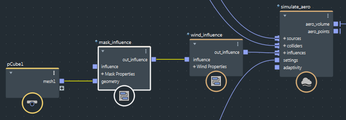

您可以通过使用遮罩控制影响物产生影响的区域。
将 mask_influence 节点与要遮罩的影响物呈菊花链状连接到一起。mask_influence 节点可以出现在链中的任意位置。链的末端必须插入图表的模拟节点的 influence 输入。
mask_influence
influence
将几何体连接到 mask_influence 节点的 geometry 输入来定义要遮罩的区域，并设置其选项。
geometry
